Quattordici partite online simulate, da 2, 3 e 4 giocatori, sia base sia con Leader e Lore. Ogni giocatore ha usato solo il mouse, cliccando quello che il suo schermo mostrava acceso. Qui sotto raccontano cosa li ha messi in difficoltà. Ogni problema ha la schermata con il punto evidenziato in rosso.
14partite giocate
13arrivate alla fine
4.419mosse inviate
0errori JavaScript
10problemi confermati
Come si è giocato
L'online vero passa da Firebase con accesso Google su invito, e i giocatori simulati non hanno account. Ogni giocatore aveva quindi la sua finestra, bloccata sul proprio posto (?seat=N). Uno script faceva da server e, dopo ogni mossa, passava lo stato nuovo agli altri schermi, come fa il gioco online. Il giocatore simulato sceglie a caso tra le cose accese: una carta della mano, Guida/Supera/Copia/Pivot, un'azione, un sistema illuminato sulla mappa, una voce di menu, i dadi, i colpi, le scelte delle carte, la fine del turno. A volte dichiara, spende risorse o usa i poteri delle carte. Lo strumento è tools/playtest/sim.mjs e si può rilanciare.
Partita
Schermo
Mosse
Fine
Potere finale
2 giocatori, base
1920×1080
232
capitolo 5, partita finita
20 · 29
2 giocatori, Leader e Lore
1920×1080
263
capitolo 5, partita finita
13 · 37
3 giocatori, base
1920×1080
266
capitolo 4, partita finita
16 · 12 · 30
3 giocatori, Leader e Lore
1920×1080
346
capitolo 5, partita finita
19 · 29 · 12
4 giocatori, base
1920×1080
435
capitolo 5, partita finita
12 · 10 · 19 · 13
4 giocatori, Leader e Lore
1920×1080
426
capitolo 5, partita finita
11 · 5 · 9 · 6
4 giocatori, Leader e Lore
1366×768
415
capitolo 5, partita finita
9 · 3 · 31 · 4
Sono le partite del secondo giro. Il primo giro (altre 7 partite, 2.036 mosse) ha trovato gli stessi problemi, più alcuni falsi blocchi dovuti al simulatore, ora corretto. Una partita del primo giro, a 4 giocatori su 1366×768, si è fermata al capitolo 3 proprio per uno di quei falsi blocchi.
Problemi che fermano o confondono il gioco
Grave
Dopo la reazione del difensore la battaglia si ferma su "battle"
Motore + interfaccia
«Ho attaccato in un portale. L'avversario ha spostato le sue navi coi Sensori Predittivi, e poi in basso è comparso "battle · dadi Combattimento" con due pulsanti, Scegli e Rinuncia. Ho premuto Scegli: niente da scegliere. Alla fine ho premuto Rinuncia, pensando di rinunciare alla battaglia, e invece ha tirato i dadi.»Giocatore 2, partita a 2 con Leader e Lore (successo 3 volte nella stessa partita)
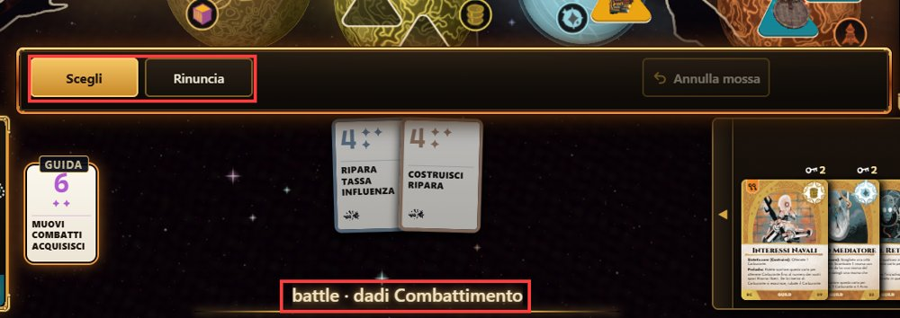
La scelta "raccogli i dadi" dell'attaccante, mostrata come una scelta di carta qualsiasi.
Cosa succede. Quando il difensore ha una reazione prima dei dadi (Sensori Predittivi, lore-15), il motore mette in pausa la battaglia e chiede all'attaccante di raccogliere i dadi (collectDice). Il tavolo non la tratta come battaglia. Mostra il nome interno "battle", non riapre la finestra dei dadi e affida il tiro a "Rinuncia".
Come correggerlo. Riaprire la finestra della battaglia, con i dadi scelti prima e la situazione aggiornata dopo la reazione, e il pulsante "Tira i dadi". Nessuna voce "Scegli" o "Rinuncia".
Grave
"Scegli" acceso anche quando non c'è niente da scegliere
Interfaccia
«Ho preso Canto di Libertà. La barra diceva solo "Canto di Libertà · quando la acquisisci", con Scegli e Rinuncia. Ho premuto Scegli più volte senza trovare nulla da scegliere. Nessuno mi ha detto che non avevo città da restituire.»Giocatore 4, partita a 4 con Leader e Lore, schermo 1366×768
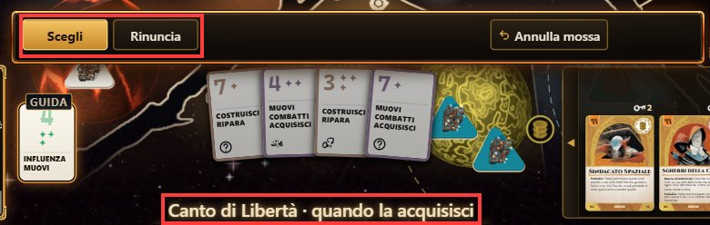
La carta chiede una cosa che il giocatore non può fare, e la barra non lo dice.
Cosa succede. Quando una carta chiede una scelta facoltativa ma non esiste nessuna risposta possibile, il tavolo mostra lo stesso "Scegli". Non dice cosa chiede la carta né perché non si può fare.
Come correggerlo. Se l'unica risposta possibile è rinunciare: una riga che spiega il perché ("Non controlli città da restituire") e un solo pulsante "Continua". Quando ci sono risposte, la barra deve descrivere la domanda della carta con parole sue, non solo il nome della carta.
Grave
Veggenti: carte scritte come codici, lista che esce dallo schermo
Interfaccia
«Ho dichiarato con i Veggenti per guardare la mano di un rivale. Mi è comparsa una griglia di riquadri con scritto "constructi aggressio 1 3", "administr constructi 2 6"… Passando sopra, la carta ingrandita era un rettangolo blu con scritto "administration-1". Le opzioni continuavano sotto il bordo dello schermo e non riuscivo a vederle tutte.»Giocatore 2, partita a 4 con Leader e Lore
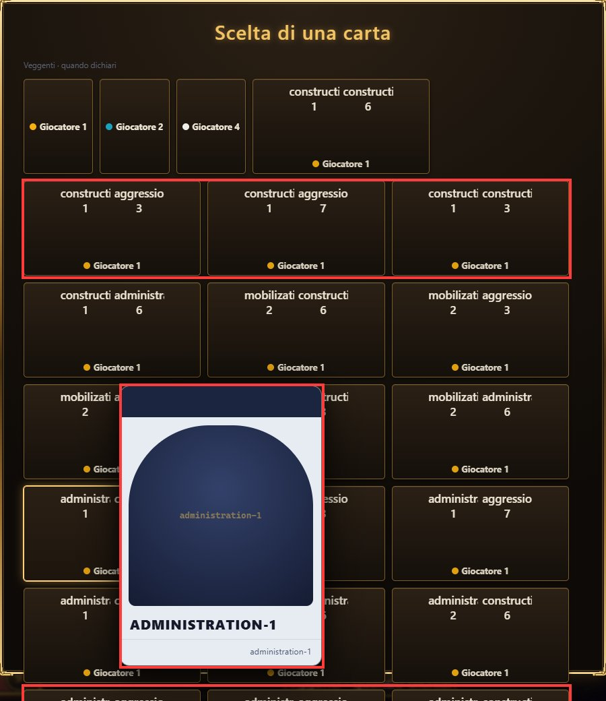
Sopra, testo al posto delle carte azione. Al centro, la carta ingrandita senza faccia. In basso, la lista tagliata dal bordo.
Cosa succede. Lo scambio dei Veggenti (court-17) elenca ogni combinazione rivale × carta da dare × carta da prendere come riquadro di testo. Le carte azione non vengono disegnate come carte, e l'ingrandimento non trova la loro faccia. La mano del rivale non si vede mai: si intuisce solo dalle opzioni.
Come correggerlo. Una finestra in due passi: prima la mano del rivale mostrata come carte vere, poi la carta da prendere e quella da dare, scelte cliccando sulle carte. Più "Non scambiare". La finestra deve stare nello schermo.
Grave
Una zona invisibile sopra la mappa blocca i clic
Interfaccia (Impeccable)
«Volevo costruire su un pianeta acceso in alto a sinistra. Si illuminava, ma cliccandoci sopra non succedeva niente. Ci sono riuscito solo da tastiera.»Giocatore 2, partita a 2 base (97 volte in tutte le partite)
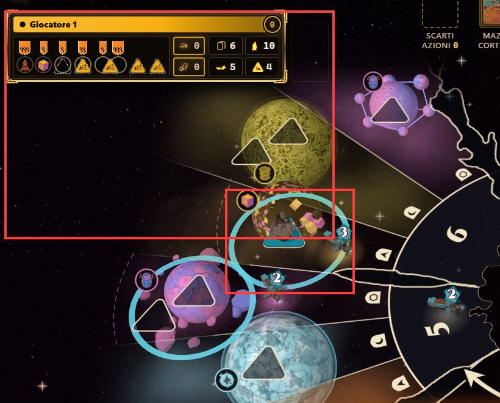
Il riquadro grande è la zona riservata ai rivali: con 2 giocatori c'è una sola banda, ma la zona resta alta come per 3 rivali. Il pianeta acceso (riquadro piccolo) è sotto di lei.
Cosa succede. La regione dei rivali ha sempre l'altezza di tre bande e cattura i clic anche dove è vuota. Lo stesso accade, meno spesso, con l'ingrandimento di una carta della Corte rimasto aperto sopra la mappa.
Come correggerlo. La regione dei rivali deve lasciar passare i clic dove non c'è nulla (pointer-events solo sulle bande), oppure prendere l'altezza delle bande che ha davvero.
Importante
Sistemi accesi sotto la mano, la barra o la Corte
Interfaccia (Impeccable)
«Il gioco mi chiedeva "Scegli un sistema sulla mappa", ma il pianeta giusto era mezzo nascosto dietro le mie carte della Corte, in basso a destra. Su un portatile era peggio: un sistema acceso stava sotto la mano e non lo vedevo proprio.»Giocatori di tutte le partite (111 volte); a 1366×768, una volta fuori dallo schermo
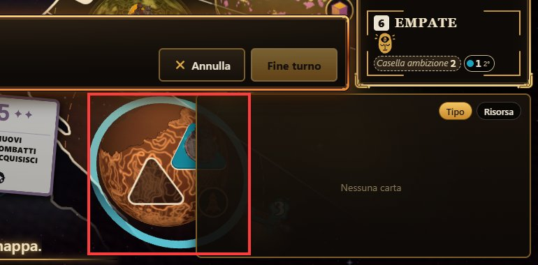
1920×1080: pianeta acceso sotto le carte della mano e il pannello della Corte.
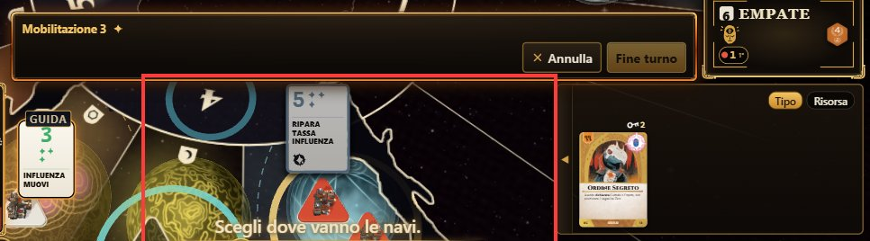
1366×768: tutta la parte bassa della mappa sta sotto la mano mentre si scelgono le destinazioni.
Cosa succede. La mappa 3D continua sotto i pannelli. Quando un passo chiede di scegliere un sistema, il tavolo non porta i sistemi accesi nella zona libera. Esiste già la funzione che lo fa (ensureVisible), ma serve solo per i menu.
Come correggerlo. Quando si accendono dei sistemi, inquadrarli tutti nella parte libera della mappa. In alternativa, una piccola etichetta cliccabile ai bordi per quelli nascosti.
Importante
La carta della Corte ingrandita copre le carte vicine e il suo menu
Interfaccia (Impeccable)
«Volevo influenzare la carta accanto a quella che stavo guardando. Muovendo il mouse sono finito sull'ingrandimento della prima, che non si chiudeva, e la seconda non riuscivo a cliccarla. E quando si apre il menu "Influenza · poi influenza…", gli agenti 3D ingranditi coprono metà dei pulsanti.»Giocatori di tutte le partite (centinaia di volte)
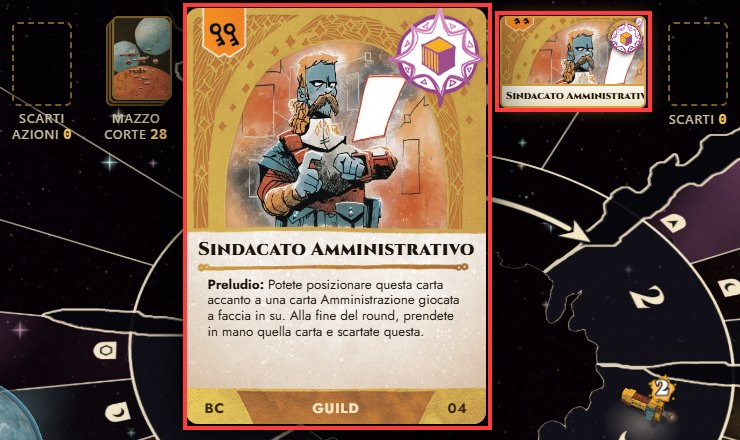
L'ingrandimento scende sopra la riga della Corte: la carta a destra resta coperta.
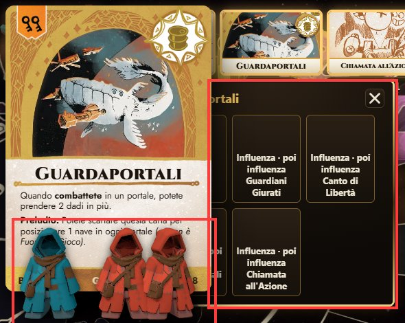
Il menu della carta, sotto l'ingrandimento e gli agenti 3D.
Cosa succede. L'ingrandimento compare sopra la carta stessa, accetta il mouse e resta aperto finché il puntatore ci sta sopra. Il menu della Corte si apre sotto l'ingrandimento.
Come correggerlo. Ingrandimento sotto la riga della Corte (non sopra le carte), che non cattura il mouse e si chiude appena si apre un menu o si passa a un'altra carta.
Importante
La finestra del Banchettatore nasconde la seconda carta
Interfaccia
«Dovevo scegliere quale carta Gilda cedere per dichiarare. Appena aperta la finestra, la prima carta si è ingrandita da sola e copriva l'altra. Ho dovuto spostare il mouse altrove per vedere le due scelte.»Giocatori delle partite con Leader e Lore (3 volte)
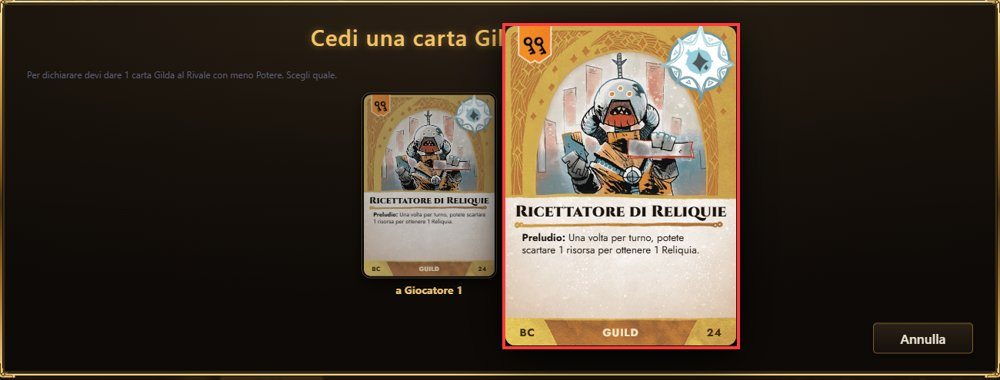
L'ingrandimento parte quando la prima carta riceve il focus della tastiera all'apertura.
Cosa succede. Lo stesso succede nella finestra "Tieni N carte". Dentro le finestre di scelta le carte sono già grandi: l'ingrandimento automatico al focus non serve e nasconde le alternative.
Come correggerlo. Niente ingrandimento automatico dentro le finestre di scelta. Se serve, va mostrato a lato, senza coprire le altre carte.
Importante
Antichi Possedimenti: lo spazio risorsa finisce sotto la carta giocata
Interfaccia
«Avevo una Reliquia sulla carta Antichi Possedimenti e volevo spenderla nel Prelude. Il suo spazio era coperto dalla carta che avevo appena guidato.»Giocatore 3, partita a 4 con Leader e Lore
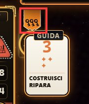
Lo spazio da 4 chiavi esce dalla plancia, a destra, sotto la carta giocata.
Cosa succede. L'ho introdotto io nella PR 63: lo spazio della carta viene aggiunto in coda agli spazi della plancia e sborda.
Come correggerlo. Disegnarlo sulla carta stessa, nel pannello della Corte propria, oppure in una casella della plancia fatta apposta.
Importante
Testo italiano sopra il testo inglese della carta
Interfaccia
«Nell'ingrandimento di Canto di Libertà l'ultima frase si leggeva due volte, in italiano e in inglese, una sopra l'altra.»Giocatore 3, partita a 4 con Leader e Lore
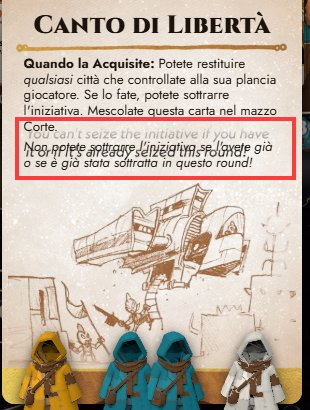
La riga in corsivo inglese resta visibile sotto la traduzione.
Cosa succede. Nella faccia della carta la nota in corsivo non viene sostituita dalla traduzione: le due righe si sovrappongono. Va controllato su tutte le carte con una nota in corsivo.
Come correggerlo. La traduzione deve sostituire la nota, non sovrapporsi. Aggiungere un controllo automatico su tutte le facce in italiano.
Fastidi minori
Minore
Comandi troppo piccoli da colpire
Impeccable
«Sul portatile i pulsanti "Tipo" e "Risorsa" della Corte e la linguetta per aprire tutta la Corte erano difficili da prendere. Anche "I miei pezzi" è una striscia sottile.»Giocatori della partita a 1366×768; "I miei pezzi" e la linguetta delle ambizioni in tutte le partite
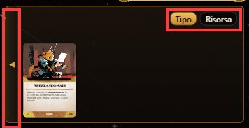
1366×768: Tipo 39×20 px, Risorsa 53×20 px, "Mostra tutta la Corte" 17 px di larghezza.
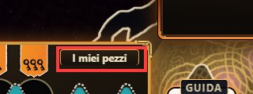
"I miei pezzi": 100×20 px. Linguetta delle ambizioni: 22×76 px.
Come correggerlo. Area di clic di almeno 24 px, senza cambiare l'aspetto (lo stesso metodo della correzione #42).
Regole e sincronia
Nessuna violazione delle regole trovata. Dopo ogni mossa lo script ha contato navi, agenti, città, spazioporti e risorse di ogni giocatore. Tutti i cambi trovati hanno una spiegazione nelle regole: un agente sull'icona dell'Oltraggio (L'Oltraggio Dilaga), i pezzi scartati dai Leader all'inizio (Sorvegliante: 2 navi e 3 agenti; Anarchico: 2 città; Mistico e Quartiermastro: agenti sull'Oltraggio).
Gli schermi restano allineati. In nessuna partita gli schermi dei giocatori hanno mostrato stati diversi.
Nessun errore nella pagina. In tutte le partite: nessun errore JavaScript, nessuna immagine rotta, nessun testo tagliato nei pulsanti.
Cosa il controllo automatico non può dire: se una scelta strategica era sensata, o se un effetto di carta raro è stato applicato bene in ogni dettaglio. Per quello servono i test per carta che abbiamo già, o una partita giocata da te.
Piano delle correzioni
Passaggio motore e flussi di gioco
La battaglia in pausa dopo la reazione del difensore riapre la finestra dei dadi con "Tira i dadi" (collectDice). Va tolto il "battle" grezzo.
Scelte di carta senza risposte possibili: una riga che spiega perché, e un solo "Continua". La domanda della carta va scritta per esteso nella barra.
Veggenti: la mano del rivale mostrata come carte, poi lo scambio scelto sulle carte. La finestra resta nello schermo.
Test end-to-end per ognuno dei tre casi, da veder fallire prima della correzione.
Il simulatore diventa un controllo da lanciare prima di ogni pubblicazione importante.
Passaggio Impeccable (layout e visibilità)
La regione dei rivali lascia passare i clic dove è vuota.
I sistemi accesi vengono inquadrati nella parte libera della mappa (tutte le risoluzioni, 1366×768 compresa).
Ingrandimento della Corte: non copre le altre carte, non cattura il mouse, si chiude quando si apre un menu. Lo stesso per gli agenti 3D.
Niente ingrandimento automatico dentro le finestre di scelta (Gilda da cedere, Tieni N carte).
Lo spazio di Antichi Possedimenti va disegnato sulla carta, non in coda alla plancia.
Facce delle carte: la traduzione sostituisce la nota in corsivo; controllo automatico su tutte le carte.
Aree di clic di almeno 24 px per Tipo, Risorsa, la linguetta della Corte, "I miei pezzi" e la linguetta delle ambizioni.